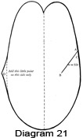

1950—How to Make Gloves
by Eunice Close
Section 2
Patterns
The most essential piece of equipment the glove maker needs is a really reliable pattern — or, rather, a series of patterns covering various sizes of gloves. The best patterns are made from thin card about the thickness of a postcard, and this is a great help when you are marking out your pattern. Some makers of glove patterns use the flimsy paper you find in ordinary dressmakers' patterns and these are not so good, as you will soon find when you begin to draw round them. To remedy this you should paste the paper pattern to a piece of thin card or stiff drawing paper. Leave under a weight for at least twenty-four hours and when dry cut out the pattern very carefully. In this way you retain any necessary directions which may be printed on the pattern and reduce the risk of making an error, as you might if you traced off the pattern on to your card.
Bought patterns usually consist of the pattern for the trank, one thumb and one fourchette. If quirks are included the pattern will be given for this. It is a wise precaution to fasten the smaller pieces to the trank with a paper clip as they are very easily mislaid. The pattern will, of course, have to be reversed for the second hand. Should you happen to be short of material, it is a good plan to cut out the trank again in paper, marking it carefully so that you know which hand it is for. You can then lay both tranks on your material, moving them about so that you can use your leather to the best advantage.
Butterick, Vogue and other popular pattern firms make glove patterns that sell for about thirty-five cents and are usually stocked by department stores. Patterns can usually be obtained in sizes ranging from 6 to 7 1/2 for women, 8 to 9 for men and 1 to 6 for children, and they usually have the size printed clearly on the outside of the envelope.
If you are intending to make gloves of various kinds and sizes it is advisable to build up a collection of simple styles in various sizes rather than a bigger selection of styles in only one or two sizes. It is much easier to adapt the style of a pattern than to alter the size, although this can be done to a limited extent. The size of a glove is usually based on the measurement around the widest part of the hand.
Since you are going to be a custom glove maker, tailoring to your own hand, why not fit each hand correctly in case the right is larger than the left, as often happens? Your tape may show a quarter size variation for the larger hand. Take this difference into consideration when checking your patterns.
Adapting a Pattern
People's hands vary very much both as to size and shape. Two people may both take size 6 1/2 in gloves, but whereas one may have long, thin fingers, the other may have short, stumpy ones. In addition to this there is a wide variation of the proportions between one finger and another. It is obviously impossible for the manufacturers of glove patterns to cater to all these differences. However, you will find that as long as a pattern is wide enough over the knuckles, you can make as many alterations as you like in the length.
When you buy a pattern open it out and lay your hand flat on it. Notice whether your fingers are longer or shorter than the pattern. If they are shorter, take a pencil and draw round the top of each finger, allowing for a seam of one-sixteenth of an inch. Trim off the pattern along your pencil lines. Should your fingers be longer than those of the pattern, gum a strip of paper to each finger, draw round your own fingers as before and trim off to the correct size.
One measurement which may need a little adjustment is the length of the slits between the fingers. Notice if each slit comes right to the bottom of the appropriate finger. If it does not, make it a little longer. If it is too long, put a pencil mark at the proper place and when you are marking out your glove remember to end the slit at this mark.
A professional glove maker of my acquaintance always asks her clients to place their hands on a piece of paper so that she can draw round them. In this way she has built up a file of individual fittings, as well as a reputation for making gloves that really fit. I may add that she is always so busy that winter gloves have to be ordered in the summer and vice-versa.
If you have to make gloves for a very short hand, cut the fingers and thumb shorter as described above and then move the thumb hole up towards the fingers for a distance of from one-quarter to one-half inch as required. Should you want to use a pattern for unlined gloves to make a pair of lined ones, you must make it larger to allow for the extra thickness inside. Allow extra width up to one-quarter inch on each side of the trank, tapering off to nothing when you get to the fingers. Allow extra width on each fourchette and all round the thumb. The hole where the thumb will go must be enlarged a little so that the thumb will fit smoothly.
There are several ways in which you can alter the style of a glove provided the pattern is a fairly simple one to begin with. A simple pull-on style can be adapted to make a pair of gauntlet gloves by lengthening the trank by two or three inches and by sloping it outwards at the wrist edge. A triangular gusset can be inserted in the side seam to give extra width but should not extend beyond the wrist. A long, narrow gusset is more graceful than a short, wide one. Two or three small gussets in a contrasting color or texture are smart and make a good way of using up odd bits.
If you wish to use an ordinary glove pattern for making a pair of mittens simply leave out the slits for the fingers and cut the top edge into a smooth continuous curve.
When buying patterns consider the thickness of the leather you intend to use. A thick skin will give you a smaller glove than if you use the same pattern for a thinner skin. If you get a pattern that is suitable for a stretchable skin such as chamois you will find that it will be smaller than one labeled with the same size intended for a thicker and stiffer skin. For this reason it is wise to notice what sort of leather is suggested on the pattern before you buy it.
Making a Basic Pattern
Some workers prefer to work from a basic pattern which they adapt and alter as the need arises. This is quite a good idea once you have acquired sufficient experience to judge what alterations are required. If you are a beginner, however, it is wise to use bought patterns at first, since a great deal can be learned from them.
To make a basic pattern to fit your own measurements, take a piece of drawing paper and lay your left hand flat on it with the fingers closed. Draw all round the hand as far as the wrist on each side. Open each pair of fingers in turn and put a dot at the base of each. Join these dots to the top of the fingers with a ruler, making sure that all your lines are perfectly parallel. Lengthen the pattern by about two inches, sloping it out slightly on the edge opposite to the thumb. (Diagram 18.)
Fold the paper in half along the edge of the index finger and cut out in
the double paper, making the slits between the fingers on the front of the
hand one-quarter inch shorter than the corresponding  slits on the back. (Diagram
19.) Cut out the hole for the thumb as shown in Diagram 20 and letter it
carefully. Using the pattern as a guide to the length of the thumb, cut out
as shown in Diagram 21. Cut the slit as shown and letter the thumb. Make
sure that the line AB on the thumb is exactly the same length as the line
AB on the trank and that the lines BC on each section are the same length.
slits on the back. (Diagram
19.) Cut out the hole for the thumb as shown in Diagram 20 and letter it
carefully. Using the pattern as a guide to the length of the thumb, cut out
as shown in Diagram 21. Cut the slit as shown and letter the thumb. Make
sure that the line AB on the thumb is exactly the same length as the line
AB on the trank and that the lines BC on each section are the same length.
Cut out your fourchette and quirk patterns as shown in Diagrams 1 and 2, making sure that the fourchettes are equal to the longest finger. When you are sure your pattern is as accurate as you can make it, trace it on to a piece of stiff paper or thin card and cut it out carefully. Mark the pattern as being for the left hand and put in the letters which show how to join in the thumb. Store your pattern in a large strong envelope with as few folds as possible.
{kind=link}
{kind=link}
Storing Patterns
Patterns should always be kept as flat as possible. Keep all the pieces of a pattern clipped together with the directions in the envelopes and add any details you may wish to remember. Store all your envelopes in a flat box where the patterns will not get creased. If you should have the misfortune to tear a pattern it can be mended quite easily with a strip of gummed paper or Scotch tape.